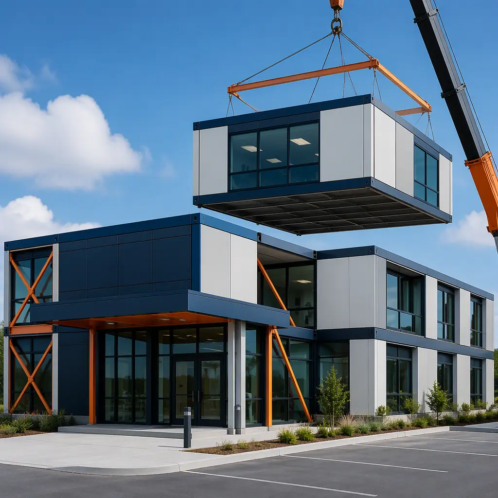
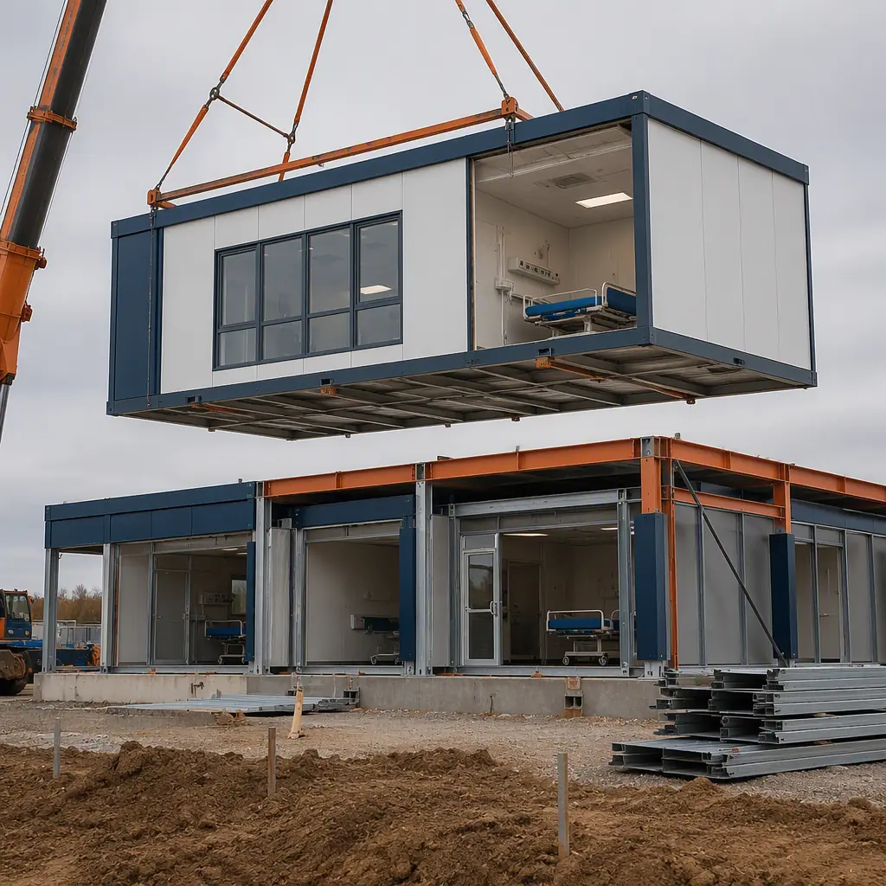
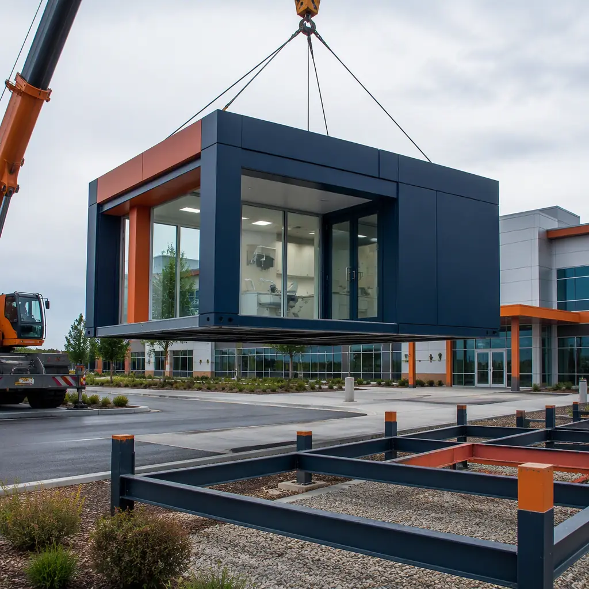
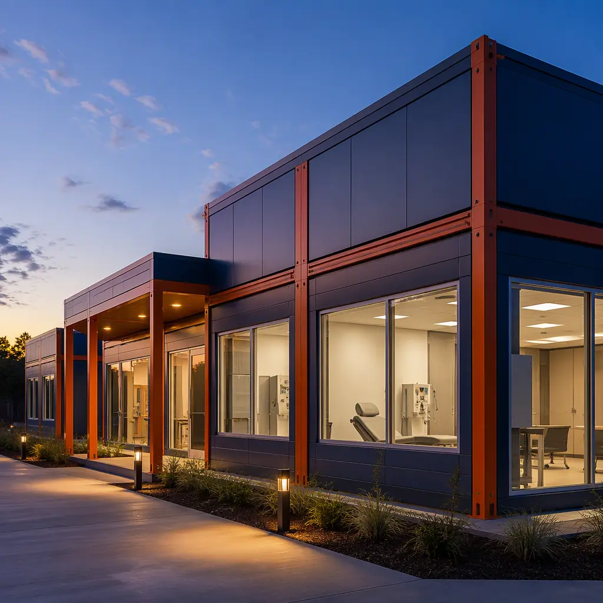

The US healthcare system is migrating from hospital-centric care to ambulatory and outpatient delivery — and the construction industry is struggling to keep pace. Ambulatory surgery centers (ASCs) now perform 65% of all surgical procedures in the United States, up from 48% a decade ago. Dental service organizations (DSOs) are adding 500–800 new clinics annually. Dialysis networks, imaging centers, and urgent care chains are expanding into communities that lack hospital access. Yet the construction timeline for a conventional medical clinic — 12–18 months from permit to occupancy — creates an 18-month gap between identifying a market opportunity and treating the first patient. Modular construction compresses that timeline to 8–11 months, delivers clinic modules with medical systems pre-installed and pre-commissioned, and provides the regulatory documentation trail that ambulatory care accreditors require. This article examines how modular construction meets the specific demands of outpatient medical facilities: ASC certification pathways, imaging suite structural requirements, dental clinic plumbing density, and the cost equation that makes modular the default choice for multi-site healthcare groups.

Why Ambulatory Care Is Moving to Modular Construction
Three structural shifts in healthcare delivery are creating demand that conventional construction cannot satisfy — and modular construction is uniquely positioned to meet:
The ASC migration is a construction challenge, not just a clinical one. Ambulatory surgery centers require the same medical infrastructure as hospital ORs — surgical-grade HVAC, medical gas systems, imaging equipment foundations, sterile processing departments — but in facilities one-third the size and one-quarter the cost. A 15,000 sq ft ASC with three ORs, a procedure room, pre-op and PACU bays, and an imaging suite costs $4.5–$6 million conventionally, with a 14–18 month construction timeline. Modular construction delivers the same facility for $3.5–$5 million in 9–12 months — a 20% hard-cost reduction and a 35% timeline compression. The difference in timeline represents six additional months of surgical revenue: at an average net revenue of $1,800 per case and 15 cases per OR per day across three ORs, that is approximately $4.9 million in revenue that a conventional build would defer.
Multi-site healthcare groups need replicable quality, not bespoke construction. A DSO building 50 dental clinics or a dialysis provider deploying 30 treatment centers cannot afford the variability of site-built construction — each clinic built by a different general contractor in a different jurisdiction produces a different outcome. Modular construction solves this through factory standardization: the 50th dental operatory module is built to the same production standard as the first, with the same plumbing rough-in dimensions, the same nitrous oxide manifold connection points, and the same radiation shielding for the panoramic X-ray alcove. Site variability is reduced to foundation work and utility tie-ins, while clinical functionality is factory-controlled.
Infection control requirements that penalize conventional construction are inherent in modular. Every medical clinic under construction must implement ICRA (Infection Control Risk Assessment) protocols if adjacent to occupied clinical space. For an ASC expanding within an occupied medical office building, ICRA Class III or IV containment adds $150–$300 per square foot to construction costs. In modular construction, the clinic modules are built in a sealed factory environment, arrive on site with interior finishes protected, and are craned into position over 2–4 weeks — reducing the on-site construction presence by 70–80% and eliminating ICRA cost entirely. This is the same advantage that makes modular construction compelling for acute care hospitals and healthcare facilities; it applies with equal force to the outpatient setting.
ASC Certification — The Regulatory Pathway for Modular Surgery Centers
Ambulatory surgery centers in the United States must satisfy Medicare Conditions for Coverage (CfC), which incorporate NFPA 101 (Life Safety Code), NFPA 99 (Health Care Facilities Code), and Facility Guidelines Institute (FGI) Guidelines for Outpatient Facilities. State licensure adds another layer of requirements that vary by jurisdiction. Modular ASC construction addresses this regulatory stack through a compliance pathway that is, in important respects, more auditable than site-built construction.
FGI Guidelines for Outpatient Facilities. The FGI outpatient guidelines specify minimum room dimensions, clearances around operating tables, medical gas outlet placement, HVAC filtration requirements (MERV 14 minimum for OR supply air), and surface finish standards for procedure rooms and sterile processing. In modular construction, these become factory production specifications — each OR module is built with FGI-compliant dimensions, laminar airflow configuration, and seamless monolithic flooring as a repeatable template. A manufacturer building 20 identical ASC OR modules across five projects achieves a compliance consistency that a general contractor building one ASC per year cannot replicate.
Medicare CfC survey preparation. ASC accreditation surveys — whether through AAAHC, The Joint Commission, or HFAP — examine the physical environment for compliance with the Life Safety Code, including fire-rated compartmentation, corridor width, egress path protection, and medical gas system certification. Modular ASCs arrive with module-level documentation packages: fire-rated assembly certifications, pressure-test results for medical gas piping (ASSE 6010/6020/6030), and HVAC commissioning reports. When the surveyor asks for documentation on the fire-rated separation between the OR corridor and the sterile processing department, a modular ASC produces a module-specific certification; a site-built ASC produces the general contractor's assurance. For ASC operators who have been through a survey, the documentation advantage alone justifies the modular approach.
A site-built ASC relies on the general contractor to coordinate six different subcontractors in a 400-square-foot OR over four months. A modular ASC builds that same OR in a factory where the ceiling structure, laminar airflow plenum, and medical gas piping are installed before the walls are enclosed — and the entire system is commissioned before the module leaves the factory. The difference in quality assurance is not incremental — it is categorical.

Dental Clinics — The Plumbing-Dense Case for Modular
Dental clinics present a construction challenge that modular methods are uniquely equipped to solve — and it comes down to plumbing density. A single dental operatory requires: high-speed suction line, saliva ejector line, ultrasonic scaler water line, handpiece air and water lines, nitrous oxide supply and scavenging lines, a dedicated sink with hot and cold water, and a floor-mounted or wall-mounted vacuum pump connection. Six to eight operatories in a 2,000 sq ft clinic means 40–60 individual plumbing connections concentrated in a single space — approximately 8–10 times the plumbing density of a standard commercial office build-out.
In conventional construction, this plumbing density creates coordination problems: the dental equipment vendor installs the chair-mounted delivery systems after the walls are closed, the mechanical contractor runs the rough-in plumbing through the walls before the drywall is hung, and the general contractor attempts to reconcile the two scopes of work — a process that routinely generates change orders of $15,000–$30,000 per clinic for plumbing rework. In modular construction, the dental plumbing is installed in the factory, with the vacuum lines pressure-tested, the nitrous oxide manifold leak-checked, and the operatory delivery systems pre-mounted. The clinic module arrives on site with the plumbing complete — the site contractor connects the module to the building's main water, waste, and vacuum lines, and the dental equipment vendor plugs in the chairs. The plumbing coordination risk moves from the construction site to the factory, where it becomes a production standard, not a project-by-project negotiation.
For dental groups that also operate specialty practices — oral surgery, endodontics, periodontics — the modular approach extends to the specialized infrastructure those practices require. An oral surgery suite with general anesthesia capability needs the same medical gas infrastructure as a hospital OR; a modular dental surgery module can be built with the same medical gas and HVAC specifications as the ASC modules described above, but configured for dental surgery case mix rather than general surgery. This modular flexibility — scaling infrastructure up or down by module type — is not available in conventional construction without redesigning the entire MEP scope for each clinic.

Imaging Suites — Structural and Shielding Requirements
Medical imaging equipment — CT scanners, MRI machines, PET/CT systems, and digital X-ray — imposes structural requirements that exceed typical commercial construction. A CT scanner weighs 4,500–5,500 lbs and requires a concrete slab with vibration isolation; an MRI machine weighs 10,000–15,000 lbs, requires radio-frequency (RF) shielding equivalent to a Faraday cage, and demands a quench vent pipe to exhaust helium in the event of a magnet quench. These are not optional; they are physics constraints that the building structure must satisfy.
Modular construction addresses imaging suite requirements through module-level pre-engineering. An MRI module is designed with the RF shielding integrated into the module walls — copper mesh or steel panels built into the module's steel frame during factory assembly, tested for shielding effectiveness before the module leaves the factory. The quench vent pipe is routed through the module roof with the required 8-inch minimum diameter and exterior termination, installed and verified at the factory. The module's floor structure is reinforced at the magnet footprint to distribute the 15,000-lb point load — a steel frame module can achieve this with structural steel cross-members that are integrated into the module chassis, not added as a field retrofit. The alternative — building an MRI suite on-site — involves coordination between the structural engineer (for the floor reinforcement), the electrical contractor (for the dedicated power supply and emergency disconnect), the mechanical contractor (for the quench vent), and the RF shielding vendor (for the copper enclosure), each working on a different schedule with different inspection milestones. The modular approach collapses these four scopes into a single factory-built module with a single commissioning report.
For the cost comparison that healthcare CFOs need, see our breakdown of modular construction cost per square foot. For the ROI framework applicable to multi-site clinic operators, refer to our modular construction ROI developer guide.
| Clinic Type | Conventional Timeline | Modular Timeline | Time Saved | Cost per Sq Ft (Modular) |
|---|---|---|---|---|
| ASC (3 OR, ~15,000 sq ft) | 14–18 months | 9–12 months | 35–40% | $230–$330 |
| Dental clinic (8 ops, ~2,500 sq ft) | 8–12 months | 5–7 months | 40–45% | $280–$380 |
| Urgent care (6 exam, ~4,000 sq ft) | 10–14 months | 6–9 months | 35–40% | $200–$280 |
| Dialysis center (16 stations) | 10–14 months | 6–8 months | 40–45% | $250–$340 |
| Imaging center (CT+MRI+X-ray) | 12–16 months | 8–10 months | 30–35% | $300–$420 |
Life Safety and Fire Protection in Outpatient Modular Clinics
Outpatient clinics fall under the business occupancy classification (IBC Chapter 3), which is less stringent than the institutional (I-2) classification that governs hospitals — but ASCs with general anesthesia capability are typically classified as ambulatory health care occupancies, which require the same fire-rated compartmentation, smoke detection, and sprinkler protection as hospitals. Modular steel-framed construction is inherently non-combustible (Type IIA or IIB), and the module-to-module joints are engineered with intumescent gaskets and mineral wool fire safing that maintain the full fire-resistance rating across the joint — installed and inspected in the factory, not field-applied and field-inspected.
For a detailed examination of how modular construction meets fire-rated assembly requirements, see our article on modular construction fire safety — fire-rated assemblies, code compliance, and passive protection. For health systems evaluating modular approaches alongside traditional methods, our comparison of modular versus traditional construction provides a framework across schedule, cost, and quality dimensions.
